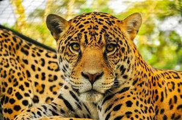

<header>LISTA DE ANIMAIS EM EXTINÇÃO</header>
<!DOCTYPE html>
<html lang="pt-br">
<head>
    <meta charset="UTF-8">
    <meta name="viewport" content="width=device-width, initial-scale=1.0">
    <title>Document</title>
    <link rel="stylesheet" href="index.css">
</head>
<body>
<nav>
<h1> Lista de Animais em extinção</h1>
<header> Existem muitos animais em extinção tanto no mundo quanto no Brasil,
para listas e fontes e informações mais CORRETAS e oficiais 
consulte o Instituto Chico Mendes de Conservação da Biodiversidade (ICMBio)
 ou organizações de proteção como o World Animal Protection.
 Animais como a onça-pintada, mico-leão-dourado, lobo-guará, baleia-azul, boto-cor-de-rosa,
 entre outros, estão em risco de extinção.<header>
</nav>
<header>
    
</header>
<h1>onça-pintada</h1>
<header> onça-pintada 
    está em risco de extinção, principais motivos:
    * 
</header>
</body>
</html>
